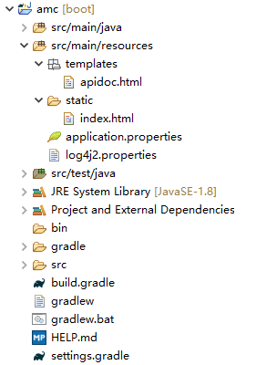
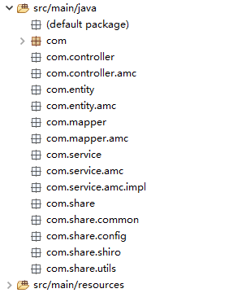
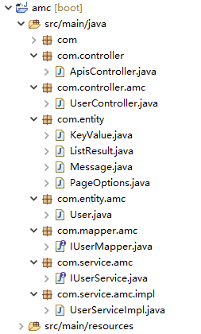
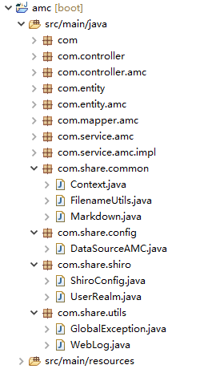

<!DOCTYPE html> <html> <head> <meta charset="UTF-8"> <title>Insert title here</title> </head> <body> Hello Apis! </body> </html>
<!DOCTYPE html> <html> <head> <meta charset="UTF-8"> <title>Insert title here</title> </head> <body> Hello AMC! </body> </html>
server.port=9000 spring.datasource.amc.url=jdbc:mysql://localhost:3308/core?useUnicode=true&useJDBCCompliantTimezoneShift=true&useLegacyDatetimeCode=false&serverTimezone=UTC spring.datasource.amc.username=root spring.datasource.amc.password=123456 spring.datasource.amc.driver-class-name=com.mysql.cj.jdbc.Driver
status = error name = PropertiesConfig filters = threshold filter.threshold.type = ThresholdFilter filter.threshold.level = debug appenders = console appender.console.type = Console appender.console.name = STDOUT appender.console.layout.type = PatternLayout appender.console.layout.pattern = %d{yyyy-MM-dd HH:mm:ss} %-5p %c{1}:%L - %m%n rootLogger.level = debug rootLogger.appenderRefs = stdout rootLogger.appenderRef.stdout.ref = STDOUT ###显示SQL语句部分 log4j.logger.com.ibatis=DEBUG log4j.logger.com.ibatis.common.jdbc.SimpleDataSource=DEBUG log4j.logger.com.ibatis.common.jdbc.ScriptRunner=DEBUG log4j.logger.com.ibatis.sqlmap.engine.impl.SqlMapClientDelegate=DEBUG log4j.logger.java.sql.Connection=DEBUG log4j.logger.java.sql.Statement=DEBUG log4j.logger.java.sql.PreparedStatement=DEBUG
plugins { id 'org.springframework.boot' version '2.2.6.RELEASE' id 'io.spring.dependency-management' version '1.0.9.RELEASE' id 'java' id 'war' } group = 'amc' version = '0.0.1-SNAPSHOT' sourceCompatibility = '1.8' configurations { compileOnly { extendsFrom annotationProcessor } all*.exclude group: 'org.springframework.boot', module: 'spring-boot-starter-logging' } repositories { mavenCentral() } dependencies { implementation 'org.springframework.boot:spring-boot-starter-thymeleaf' implementation 'org.springframework.boot:spring-boot-starter-web' implementation 'org.mybatis.spring.boot:mybatis-spring-boot-starter:2.1.2' implementation 'org.springframework.boot:spring-boot-starter-log4j2' compileOnly 'org.projectlombok:lombok' annotationProcessor 'org.projectlombok:lombok' implementation 'com.alibaba:fastjson:1.2.68' runtimeOnly 'mysql:mysql-connector-java' providedRuntime 'org.springframework.boot:spring-boot-starter-tomcat' testImplementation('org.springframework.boot:spring-boot-starter-test') { exclude group: 'org.junit.vintage', module: 'junit-vintage-engine' } } test { useJUnitPlatform() }


package com.controller; import org.springframework.ui.Model; import org.springframework.web.bind.annotation.PathVariable; import org.springframework.web.bind.annotation.RequestMapping; import org.springframework.web.bind.annotation.RequestMethod; import org.springframework.web.bind.annotation.RestController; import org.springframework.web.servlet.ModelAndView; import lombok.extern.slf4j.Slf4j; @Slf4j @RestController @RequestMapping("/apis") public class ApisController { @RequestMapping(value = {" ", "", "/" }, method = RequestMethod.GET) public ModelAndView getDefault() throws Exception { log.info("url:/apis"); ModelAndView mv = new ModelAndView("apidoc.html"); return mv; } @RequestMapping("/{name}") public ModelAndView apisHelp1(@PathVariable("name") String name) { log.info("url:/apis/"+name); ModelAndView mv = new ModelAndView("apidoc.html"); return mv; } @RequestMapping("/{pack}/{name}") public ModelAndView apisHelp2(@PathVariable("pack") String pack,@PathVariable("name") String name,Model model) { log.info("url:/apis/"+pack+"/"+name); ModelAndView mv = new ModelAndView("apidoc.html"); return mv; } }
package com.controller.amc; import org.springframework.beans.factory.annotation.Autowired; import org.springframework.web.bind.annotation.RequestBody; import org.springframework.web.bind.annotation.RequestMapping; import org.springframework.web.bind.annotation.RequestMethod; import org.springframework.web.bind.annotation.RestController; import org.springframework.web.servlet.ModelAndView; import com.alibaba.fastjson.JSONObject; import com.entity.ListResult; import com.entity.Message; import com.entity.PageOptions; import com.entity.amc.User; import com.service.amc.IUserService; import lombok.extern.slf4j.Slf4j; @Slf4j @RestController @RequestMapping("/user") public class UserController { @Autowired private IUserService userService; @RequestMapping(value = {" ", "", "/" }, method = RequestMethod.GET) public ModelAndView getDefault() throws Exception { ModelAndView mv = new ModelAndView("apis.html"); return mv; } @RequestMapping(value="/list",method = RequestMethod.POST) public ListResult<User> getUsers(@RequestBody PageOptions page){ log.info(JSONObject.toJSONString(page)); return userService.getUsers(page); } @RequestMapping(value="/insert",method = RequestMethod.POST) public Message insertUser(@RequestBody User user) { log.info(JSONObject.toJSONString(user)); userService.insertUser(user); return new Message(0,"/core/user/insert"); } @RequestMapping(value="/delete",method=RequestMethod.POST,produces="application/json;charset=UTF-8") public Message deleteUser(@RequestBody JSONObject param) throws Exception { log.info(param.toJSONString()); userService.deleteUser(param.getString("id")); return new Message(0,"/core/user/delete"); } @RequestMapping(value="/update",method=RequestMethod.POST) public Message updateUser(@RequestBody User user) { log.info(JSONObject.toJSONString(user)); userService.updateUser(user); return new Message(0,"/core/user/update"); } @RequestMapping(value="/find",method=RequestMethod.POST,produces="application/json;charset=UTF-8") public User findUser(@RequestBody JSONObject param){ log.info(param.toJSONString()); return userService.findUser(param.getString("keywords")); } @RequestMapping(value="/get",method=RequestMethod.POST,produces="application/json;charset=UTF-8") public User getUser(@RequestBody JSONObject param) throws Exception { log.info(param.toJSONString()); return userService.getUser(param.getString("id")); } }
package com.entity; import lombok.Data; @Data public class KeyValue { private String key = null; private String value = null; public KeyValue(String key,String value) { this.key = key; this.value = value; } }
package com.entity; import java.util.List; import lombok.Data; @Data public class ListResult<T> { private List<T> data = null; private int index = 0; private int size = 0; private int total = 0; public ListResult() {} public ListResult(List<T> data) { this.data = data; } public ListResult(int index,int size,int total,List<T> data) { this.index = index; this.size = size; this.total = total; this.data = data; } }
package com.entity; import lombok.Data; @Data public class Message { private int status = 0; private String message = ""; public Message() {} public Message(int status,String message) { this.status = status; this.message = message; } }
package com.entity; import lombok.Data; @Data public class PageOptions { private boolean loading = false; private int pageIndex = 0; private int pageSize = 0; private int total = 0; private String sortName = ""; private String sortValue = ""; private String keywords = ""; }
package com.entity.amc; import lombok.Data; /** TABLE: `amc_user` ( `username` varchar NOT NULL COMMENT '用户名（账户名）', `password` varchar DEFAULT NULL COMMENT '账户密码', `name` varchar DEFAULT NULL COMMENT '用户姓名', `email` varchar DEFAULT NULL COMMENT '电子邮件', `phone` varchar DEFAULT NULL COMMENT '手机号码', `role` varchar DEFAULT NULL COMMENT '角色ID', `secret` varchar DEFAULT NULL COMMENT '保密字', `retime` timestamp DEFAULT CURRENT_TIMESTAMP COMMENT '本记录修改时间', PRIMARY KEY (`username`) USING BTREE ) COMMENT = '用户表' **/ @Data public class User { private String username = ""; private String password = ""; private String name = ""; private String email = ""; private String phone = ""; private String role = ""; private String secret = ""; private String retime = ""; }
package com.mapper.amc; import java.util.List; import org.apache.ibatis.annotations.Mapper; import org.apache.ibatis.annotations.Param; import com.entity.amc.User; @Mapper public interface IUserMapper { public int getTotal(); public int getTotalByCond( @Param("cond") String cond ); public List<User> getUsers(); public List<User> getUserPage( @Param("pageStart") int pageStart, @Param("pageSize") int pageSize ); public List<User> getUserPageBySort( @Param("pageStart") int pageStart, @Param("pageSize") int pageSize, @Param("sortName") String sortName, @Param("sortValue") String sortValue ); public List<User> getUserPageByCond( @Param("pageStart") int pageStart, @Param("pageSize") int pageSize, @Param("cond") String cond ); public List<User> getUserPageByCondSort( @Param("pageStart") int pageStart, @Param("pageSize") int pageSize, @Param("cond") String cond, @Param("sortName") String sortName, @Param("sortValue") String sortValue ); public void insertUser(@Param("user") User user); public void deleteUserById(@Param("id") String id); public void updateUser(@Param("user") User user); public List<User> findUsersByCond(@Param("cond") String cond); public User getUserById(@Param("id") String id); }
package com.service.amc; import com.entity.ListResult; import com.entity.PageOptions; import com.entity.amc.User; public interface IUserService { public ListResult<User> getUsers(PageOptions page); public void insertUser(User user); public void deleteUser(String id); public void updateUser(User user); public User findUser(String keywords); public User getUser(String id); }
package com.service.amc.impl; import org.springframework.beans.factory.annotation.Autowired; import org.springframework.stereotype.Service; import com.alibaba.fastjson.JSONObject; import com.entity.ListResult; import com.entity.PageOptions; import com.entity.amc.User; import com.mapper.amc.IUserMapper; import com.service.amc.IUserService; import lombok.extern.slf4j.Slf4j; @Slf4j @Service public class UserServiceImpl implements IUserService { @Autowired private IUserMapper userMapper; @Override public ListResult<User> getUsers(PageOptions page) { log.info(JSONObject.toJSONString(page)); ListResult<User> lr = new ListResult<User>(); String cond = ""; String sortName = ""; String sortValue = ""; int pageIndex = 0; int pageSize = 0; int pageStart = (page.getPageIndex()-1)*page.getPageSize(); lr.setData(userMapper.getUserPageByCondSort(pageStart, pageSize, cond, sortName, sortValue)); lr.setIndex(pageIndex); lr.setSize(pageSize); lr.setTotal(userMapper.getTotalByCond(cond)); // TODO Auto-generated method stub return lr; } @Override public void insertUser(User user) { // TODO Auto-generated method stub } @Override public void deleteUser(String id) { // TODO Auto-generated method stub } @Override public void updateUser(User user) { // TODO Auto-generated method stub } @Override public User findUser(String keywords) { // TODO Auto-generated method stub return null; } @Override public User getUser(String id) { // TODO Auto-generated method stub return null; } }

package com.share.common; public class Context { }
package com.share.common; public class FilenameUtils { }
package com.share.common; public class Markdown { }
package com.share.config; import javax.sql.DataSource; import org.apache.ibatis.session.SqlSessionFactory; import org.mybatis.spring.SqlSessionFactoryBean; import org.mybatis.spring.SqlSessionTemplate; import org.mybatis.spring.annotation.MapperScan; import org.springframework.beans.factory.annotation.Qualifier; import org.springframework.boot.context.properties.ConfigurationProperties; import org.springframework.boot.jdbc.DataSourceBuilder; import org.springframework.context.annotation.Bean; import org.springframework.context.annotation.Configuration; import org.springframework.jdbc.datasource.DataSourceTransactionManager; @Configuration @MapperScan(basePackages="com.mapper.amc",sqlSessionTemplateRef="amcSqlSessionTemplate") public class DataSourceAMC { @Bean(name = "amcDataSource") @ConfigurationProperties(prefix = "spring.datasource.amc") public DataSource testDataSource() { return DataSourceBuilder.create().build(); } @Bean(name = "amcSqlSessionFactory") public SqlSessionFactory testSqlSessionFactory(@Qualifier("amcDataSource") DataSource dataSource) throws Exception { SqlSessionFactoryBean bean = new SqlSessionFactoryBean(); bean.setDataSource(dataSource); return bean.getObject(); } @Bean(name = "amcTransactionManager") public DataSourceTransactionManager testTransactionManager(@Qualifier("amcDataSource") DataSource dataSource) { return new DataSourceTransactionManager(dataSource); } @Bean(name = "amcSqlSessionTemplate") public SqlSessionTemplate testSqlSessionTemplate(@Qualifier("amcSqlSessionFactory") SqlSessionFactory sqlSessionFactory) throws Exception { return new SqlSessionTemplate(sqlSessionFactory); } }
package com.share.shiro; public class ShiroConfig { }
package com.share.shiro; public class UserRealm { }
package com.share.utils; public class GlobalException { }
package com.share.utils; public class WebLog { }